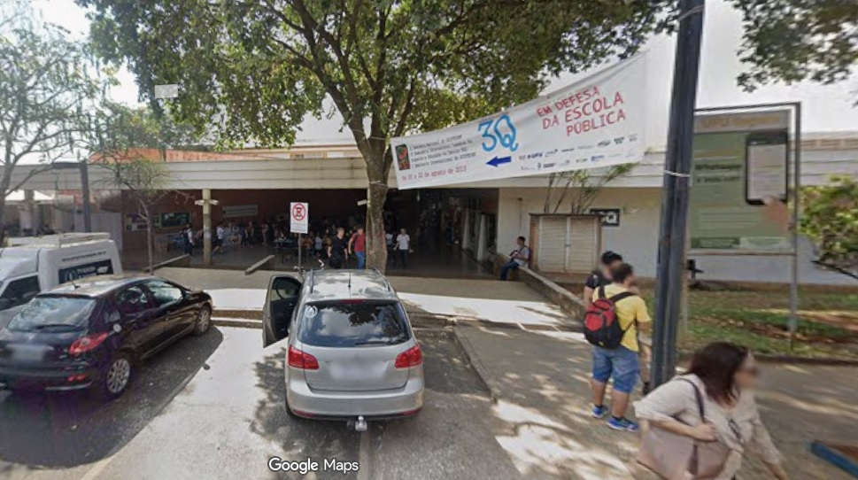

CÓDIGO DA FASE
abaco

No bloco 3Q é onde os matemáticos possuem a maior parte de suas aulas até a primeira metade do curso.
Aqui também temos perto do LOL laboratórios de computadores que às vezes são utilizados para oferta de minicursos.
Atenção: Cuidado com os banheiros perto do LOL! Principalmente as mulheres.